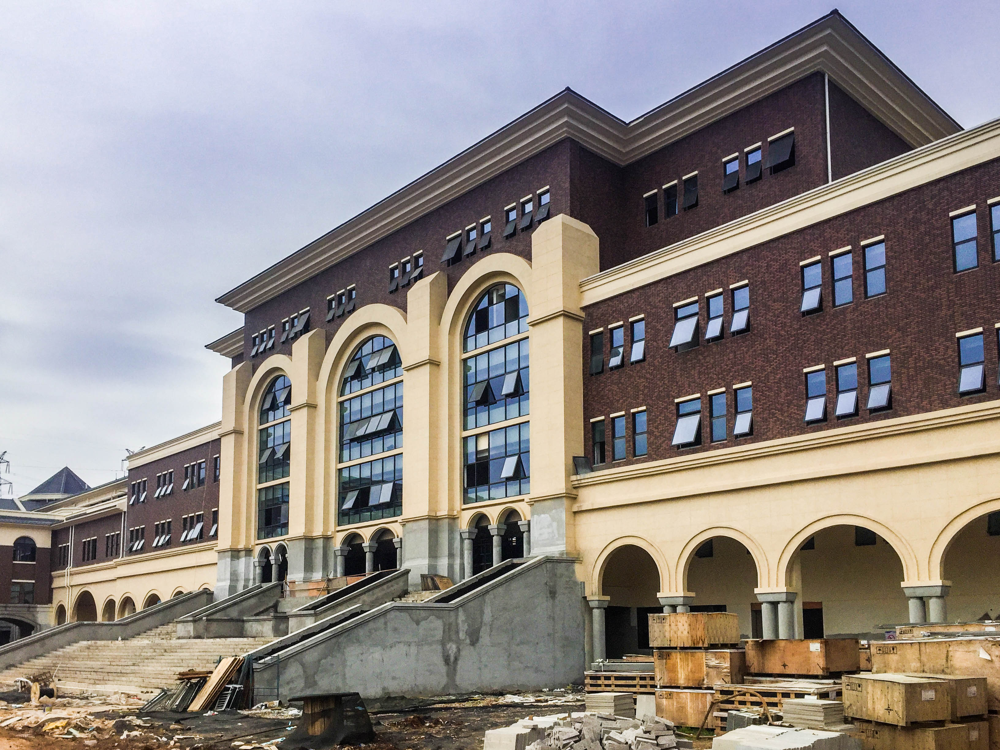

Zhejiang, China

As a sister school to Suzhou International Academy, BFSU, Yiwu International Academy opened to Grades 1–7 in September 2019 in glorious buildings occupying a 250mu (17 hectare) site in western Yiwu, the "commodities capital" of China.
YIA offers the Chinese National Curriculum with strong additional English bilingual elements in Grades 1–9. The High School offers IGCSEs and A Levels.
John served as Honorary Principal from 2017 to 2020, developing curriculum bridging Chinese national educational requirements with international pathways and working with leadership on institutional strategy and quality assurance during a period of significant growth.